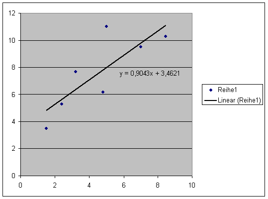

CKurs - Aufgaben zu C
Lineare Regression
Aufgabenstellung:
Schreiben Sie bitte ein C-Programm zur Berechnung der linearen
Regression (LR)*. Die Werterpaare (x, y) sollen aus einer Datei
„messdaten.txt“ gelesen werden.
Bearbeiten Sie die Wertepaare nacheinander.
Bilden Sie
Sx = SUMME(x)
Sxy = SUMME(x*y)
Sy = SUMME(y)
Nach Abarbeitung aller Meßwerte könne Sie daraus Achsenabscnitt und
Steigung der Regressionseraden berechnen*.
Inhalt der Datei „messdaten.txt“:
1.5 3.52.4 5.3
3.2 7.7
4.8 6.2
5.0 11.0
7.0 9.5
8.43 10.27
*) Für mehr Informationen über die lineare Regression siehe:
http://en.wikipedia.org/wiki/Linear_regression
http://de.wikipedia.org/wiki/Regressionsanalyse
Lösung:
Durch minimales Anpassen des Programms aus Aufgabe 8 bzw 7 kann die Aufgabe sehr schnell gelöst werden:
CCode:
#include <stdio.h>int main(int argc, char **argv)
{
double *x ,*y, *xy,
actx,acty,
Sx=0,Sxy=0,Sy=0,
bz=0,bn=0,b,a;
int count=0, datasize=10 ,i ;
FILE *fdata;
if(argc < 2) {
fprintf(stderr, "Aufruf via progname filename");
return 0;
}
if ((fdata = fopen(argv[1], "r")) == NULL)
{
fprintf(stderr, "Datenfile kann nicht gefunden werden. \n");
return -1;
}
count=0;
x=(double*)malloc(sizeof(double)*datasize);
y=(double*)malloc(sizeof(double)*datasize);
while(fscanf(fdata,"%lf %lf",&actx,&acty)!=EOF){
printf("(%+4.2f, %+4.2f)\n",actx,acty);
count++;
if (count > datasize) {
datasize+=10;
x=(double*)realloc(x,sizeof(double)*datasize);
y=(double*)realloc(x,sizeof(double)*datasize);
}
x[count-1]=actx;
y[count-1]=acty;
Sx+=actx;
Sy+=acty;
Sxy+=actx*acty;
}
printf("Sx=%5.2f , Sy=%5.2f , Sxy=%5.2f\n",Sx,Sy,Sxy);
Sx=Sx/count;
Sy=Sy/count;
//nach Wikipedia
for (i=0;i<count;i++){
bz+=(x[i]-Sx)*(y[i]-Sy);
bn+=(x[i]-Sx)*(x[i]-Sx);
}
b=bz/bn;
a=Sy-b*Sx;
printf("Der Achsenabschnitt liegt bei %6.3f und die Steigung bei %6.3f",a,b);
return 0;
}
Der Aufruf
>c9.exe messdaten.txtliefert dann das gewünschte Ergebnis
Ausgabe stdout:
(+1.50, +3.50)
(+2.40, +5.30)
(+3.20, +7.70)
(+4.80, +6.20)
(+5.00, +11.00)
(+7.00, +9.50)
(+8.43, +10.27)
Sx=32.33 , Sy=53.47 , Sxy=280.45
Der Achsenabschnitt liegt bei 3.462 und die Steigung bei 0.904
Dies stimmt mit den von Excel berechneten Werten überein:
